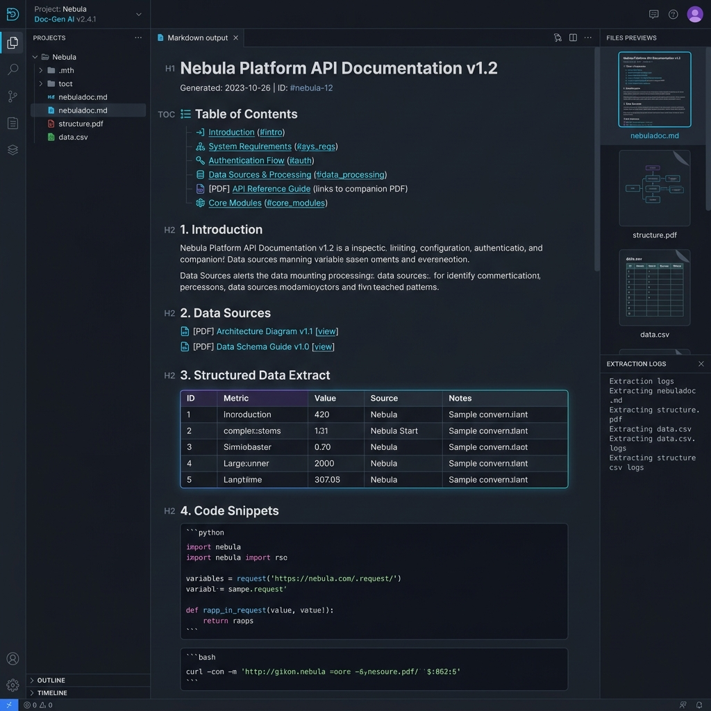
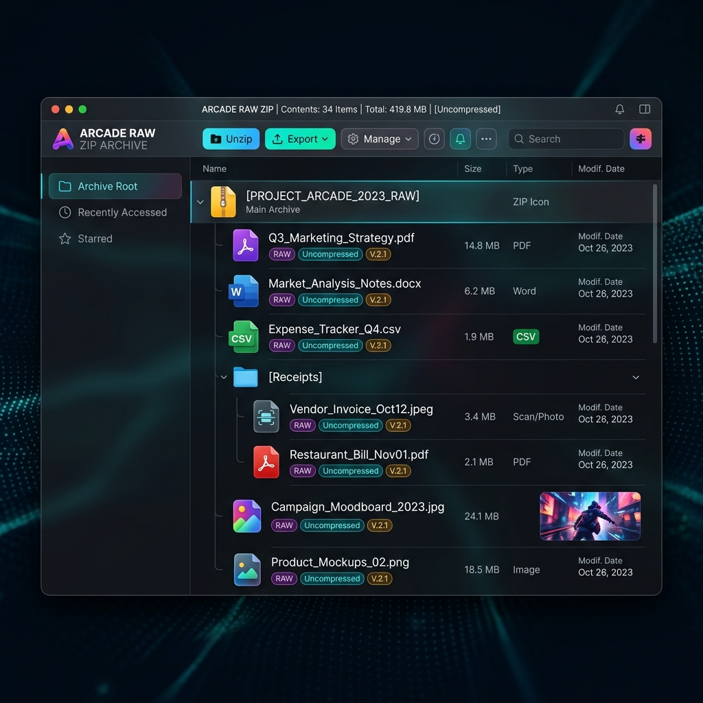

Heterogeneous archives are a headache for LLMs. Omnidoc recursively walks any ZIP file, parses complex files, extracts metadata, OCRs scanned docs, and emits a single, beautifully formatted, structured Markdown or PDF document.
LLMs are outstanding at consuming unified text. But real-world data dumps are cluttered with PDFs containing embedded images, complex multi-sheet Excel trackers, raw CSV tables, and media files. Omnidoc binds them all elegantly into one clean, structured context.
Developers spend hours writing fragile scripts to extract text from files, manually translating Excel worksheets, ignoring scanned receipts, and silently dropping media contexts.
A single command generates a beautifully structured, standardized Markdown or PDF document with recursive file manifests, OCR fallback, and clear file separator boundaries.
Omnidoc handles different file types dynamically. It uses file extensions and byte content sniffing to dispatch the perfect custom extractor for PDFs, Excels, images, XML/HTML, raw text, and source code.
To ensure the LLM understands the global layout of the archive, Omnidoc generates a beautiful, comprehensive directory table at the top of the document showing paths, compressed/uncompressed sizes, modified dates, and file statuses.
Extracts native text whenever possible, but falls back to pytesseract OCR for scanned pages, printing confidence margins and logging tracing metrics.
Large media files (such as .mp4 and .mov) are explicitly mapped and skipped. Instead of choking resources, they are rendered inline as clear context markers.
Low-confidence OCR pages are extracted as optimized images and compiled into a companion `
Omnidoc is fully observable. Monitor compression progress, track processing speeds, see OCR fallbacks, and trace extraction exceptions directly in a futuristic glassmorphic command center.
A robust, multi-stage ingestion loop designed for speed, offline reliability, and absolute data preservation.
Walks the archive recursively to filter out OS metadata (`__MACOSX`, `.DS_Store`).
Peeks at the raw bytes to resolve extensionless files and map them to extractors.
Parses tables, decodes binary layouts, and formats data natively into markdown structures.
Truncates output by token constraints and merges low-confidence images into the Visual PDF.
Emits a single output document featuring the complete recursive manifest and clean text blocks.
Hover or sweep across the split window to witness how Omnidoc translates a complex, uncompressed raw ZIP archive into a clean, structured Markdown report ready to feed any LLM.

